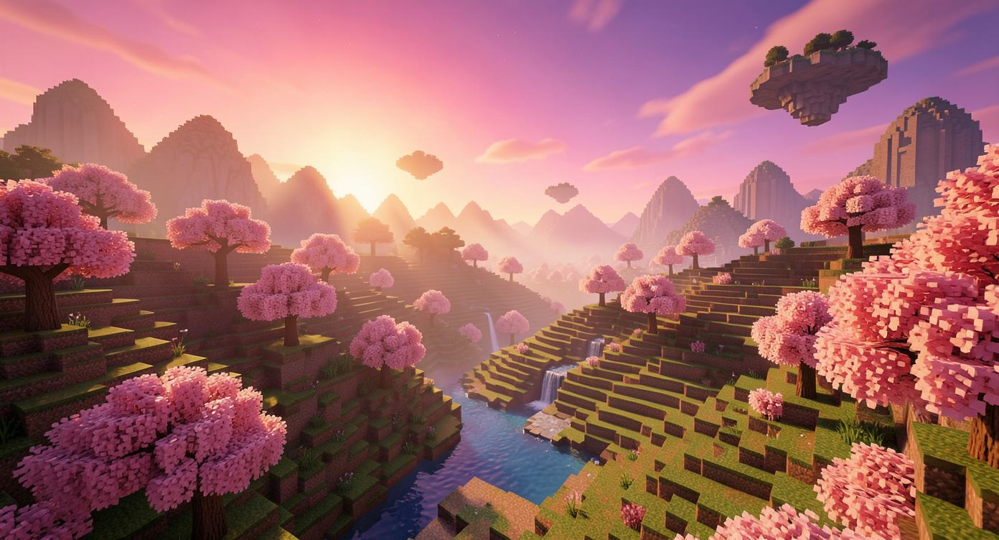

BerryTrip
Выживание, приключения и свои люди
Сборка на NeoForge для Minecraft 1.21.1: магия, уютный декор и друзья рядом. Ставится за три шага, обновляется лаунчером и запускается одной кнопкой.

Мир BerryTrip
1.21.1 · NeoForge · 184 мода · свой сервер
BerryUp — это один jar, а не установщик
Ровно один файл BerryUp.jar: без архивов и скриптов рядом. Он работает поверх Prism Launcher или его форка PineconeMC — поставь лаунчер один раз, запусти игру, и BerryUp сам найдёт сборку, скачает моды и запустит сервер.
Три шага — и ты в игре
Ничего не нужно настраивать вручную: ни Java, ни пути к папкам, ни моды.
Поставь Prism или PineconeMC
Обычный установщик с официального сайта. Запусти игру один раз — лаунчер скачает нужную Java.
Скачать PrismСкачай BerryUp.jar
Один файл на 1,4 МБ. Положи в обычную папку, например C:\BerryUp — не в Program Files.
BerryUp.jarЗапусти и нажми «Играть»
BerryUp найдёт Prism, установит сборку, докачает моды и подключит к серверу. Дальше — только кнопка.
Скачать BerryUp.jarСкачать
Актуальная версия BerryUp 3.2. Обновления лаунчер забирает сам — вручную ничего переставлять не нужно.
BerryUp.jar
v3.2 · 1,4 МБ · один файлЛаунчер целиком в одном jar. Сам находит Prism, ставит сборку BerryTrip, обновляет моды через packwiz, следит за памятью и подключает к серверу. Обновляется BerryUp тоже сам: скачивает новую версию и подменяет свой файл по кнопке «Перезапустить».
Prism Launcher
Основной лаунчер для BerryUp
PineconeMC
Форк Prism — тоже поддерживается
instance.zip
Сборка без BerryUp для Prism
Меньше ручной работы
BerryUp не заменяет Prism — он убирает всё, что обычно делают руками вокруг сборки.
Находит лаунчер сам
Prism Launcher, PineconeMC или ElyPrismLauncher, включая портативные сборки. Путь можно указать вручную.
Ставит и обновляет сборку
Распаковывает инстанс BerryTrip и тянет моды через packwiz — без архивов и папок вручную.
Подключает к серверу
Один клик «Играть с подключением»: BerryUp сам подставляет нужный адрес и запускает игру.
Экономит память
Необязательные моды, ресурспаки и шейдеры выключаются тумблером и уезжают в berry-off.
Настройка памяти
Слайдер пишет MaxMemAlloc прямо в инстанс: конфиги править не нужно.
Понятная диагностика
Видно, что нашлось, сколько модов, версию Java и пака. Отчёт для помощи копируется одной кнопкой.
184 мода, которые не надо ставить по одному
BerryTrip — это готовый инстанс: генерация мира, приключения, магия, декор и оптимизация уже подобраны и проверены вместе. Сервер держит тот же набор модов, поэтому клиент и мир совпадают.
- Minecraft 1.21.1 и NeoForge 21.1.267
- Моды обновляются через packwiz, без переустановки
- Сохранения и настройки остаются в инстансе Prism
Частые вопросы
Коротко о том, что спрашивают чаще всего.
Почему нет exe и установщика?
Установщик и exe вызывали ложные срабатывания антивирусов и SmartScreen. BerryUp переписан на Java: один jar, без установки в систему, реестра и ярлыков. Удалить — просто удалить файл.
Нужна ли Java отдельно?
Нет. BerryUp работает на Java, которая уже есть в Prism Launcher или PineconeMC. Если Prism только установлен, запусти в нём игру один раз: он скачает Java, и BerryUp её найдёт.
Двойной щелчок по jar ничего не делает
На чистой Windows файлы .jar ничем не открываются. Это лечится один раз: правый клик по BerryUp.jar → «Открыть с помощью» → «Выбрать другое приложение» → укажи javaw.exe из %APPDATA%\PrismLauncher\java\java-runtime-*\bin и поставь галочку «Всегда». Дальше — обычный двойной щелчок.
Windows пишет, что файл скачан из интернета
Это стандартная метка браузера. Нажми «Подробнее» → «Выполнить всё равно». SHA-256 файла лежит в latest-java.json — хеш можно сверить.
Где сборка и сохранения?
В Prism: %APPDATA%\PrismLauncher\instances\BerryTrip. BerryUp их не удаляет и не переносит; настройки лаунчера — в %APPDATA%\BerryUp.
Как обновляется BerryUp?
Лаунчер сам проверяет latest-java.json, скачивает новый jar и по кнопке «Перезапустить» заменяет свой же файл. Никаких скриптов и архивов рядом с лаунчером нет.
Можно поставить сборку без BerryUp?
Да. Prism → Add Instance → Import from zip → instance.zip, затем Launch: Prism сам скачает моды через packwiz.
Осталось скачать один файл
BerryUp поставит сборку, обновит моды и подключит к серверу. Дальше игра запускается одной кнопкой.